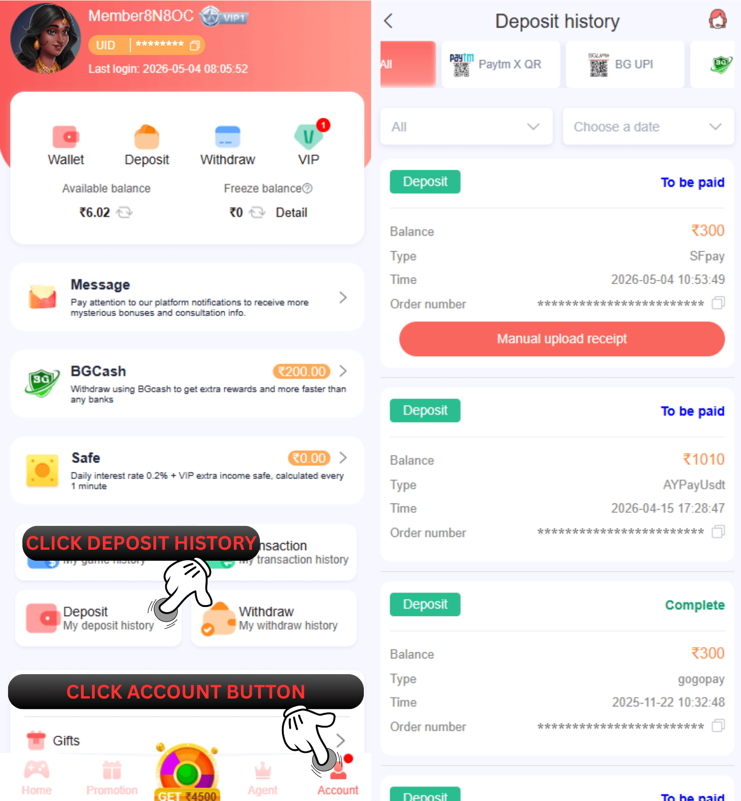

66 Lottery जमा इतिहास
प्रश्न: मैं अपने द्वारा जमा की गई राशि का पता कैसे लगा सकता हूं?
उ: नमस्ते, कृपया खाता पर क्लिक करें और आपके द्वारा अब तक की गई जमा राशि देखने के लिए मेरा जमा इतिहास जमा करें का चयन करें। धन्यवाद

प्रश्न: जमा इतिहास का उपयोग किस लिए किया जाता है?
उ: जमा इतिहास के लिए आपके द्वारा किए गए सभी जमा रिकॉर्ड की जांच करने के लिए 66 Lottery का उपयोग करें और उस पर सभी विवरण देख सकते हैं जैसे कि आप कितनी राशि जमा करते हैं, आप किस विधि से करते हैं, और स्थिति यह पहले से ही पूर्ण है, रद्द कर दी गई है, विफल, या भुगतान किया जाना है